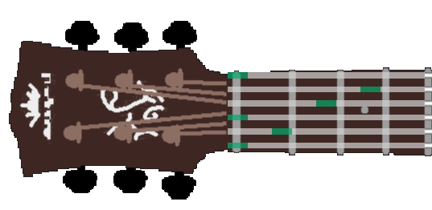
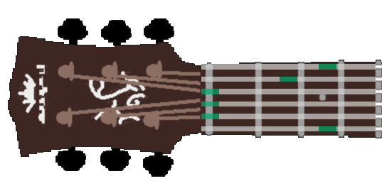
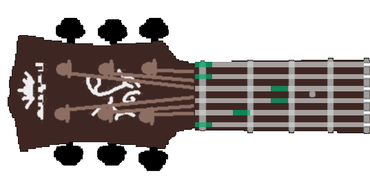
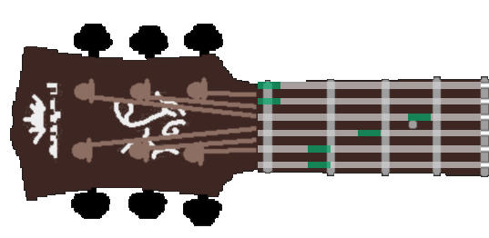
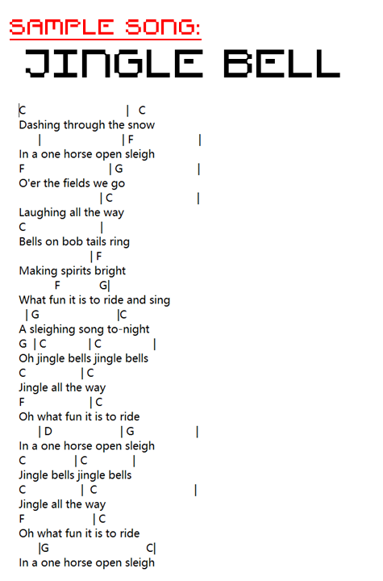

How to set chords
You may play this guitar without any manual if you like, but if you need
to use the pre-set chords:
Press Key on Keyboard:
- Chord C: Press C
- Chord G: Press G
- Chord Am: Press A
- Chord F: Press F
- Chord D7: Press D
- Chord Em: Press E
- clear Chord: Press TAB






